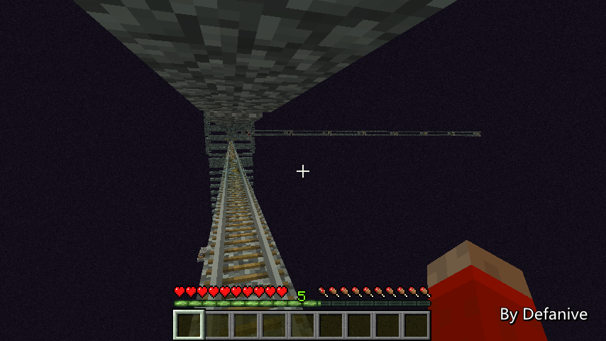
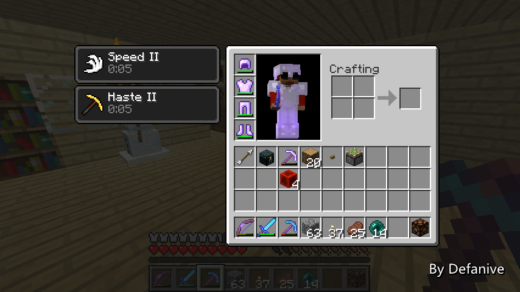
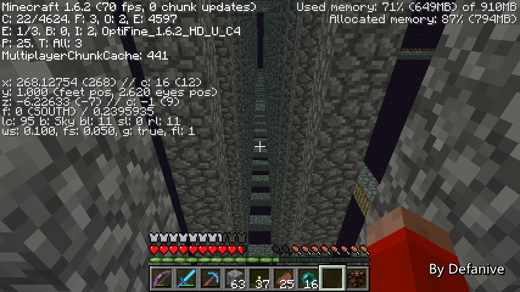
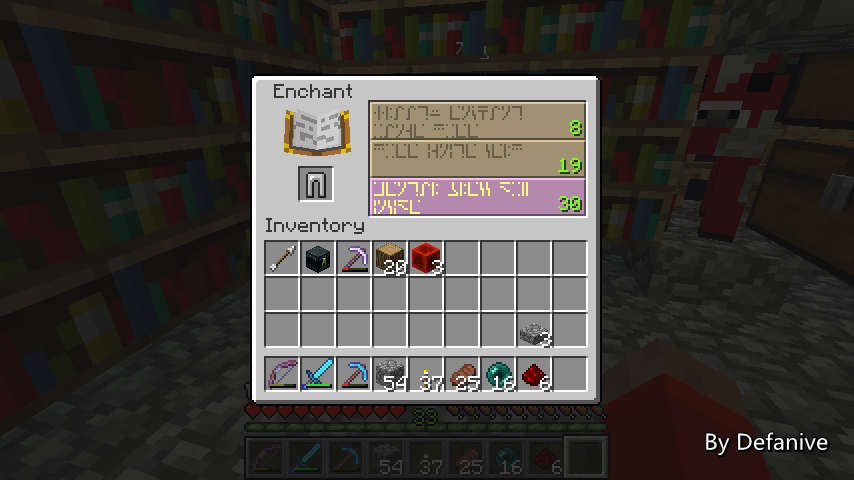

首页
上一页
265
266
267
268
269
270
270
271
272
273
274
275
下一页
末页
defanive2
无尽黑夜
14
接下来我们做一个测试
在终点处把红石电路往左侧移动
这样的话就可以把整个小黑塔的2个chunk都加载了
——来自 MCLive
22027楼
2013-09-04 10:58
defanive2
无尽黑夜
14
接下来把身上的东西都放到箱子里面
此时从F3可以看到小黑塔里面已经聚集了82只小黑了
达到了刷怪上限，不会再刷怪了
——来自 MCLive
22028楼
2013-09-04 11:00
defanive2
无尽黑夜
14
接下来被一只小黑杀死并重生
——来自 MCLive
22029楼
2013-09-04 11:01
defanive2
无尽黑夜
14
重生后从家里到遗迹
这个时候如果再进END的话
水流BUD就会生效
并且电路一直连接激活到小黑塔，而里面包含了82只小黑
也就是说，进入END之后刷怪上限就会被挤满
从而不会再刷怪
现在就是测试成功与否的时刻了
——来自 MCLive
22030楼
2013-09-04 11:04
defanive2
无尽黑夜
14
来到END，可以看到F3的entity是1/2
而这2个entity就是矿车和我们自己
也就是说，没有再刷出小黑了！
——来自 MCLive
22031楼
2013-09-04 11:05
defanive2
无尽黑夜
14
一望无际的宁静！
——来自 MCLive
22032楼
2013-09-04 11:15
defanive2
无尽黑夜
14
不管怎么说今天的任务是挺成功的
至少说明了建造没有问题
还需要把电路延长到更远的地方，在那里才建造真正用的80只小黑的chunk
今天就直播到这里了，下次继续！
——来自 MCLive
22033楼
2013-09-04 11:23
defanive2
无尽黑夜
14
周末了，又来到了打MC的时间！
大家开学第一个星期感觉怎么样
我的话开学2个星期都算不错
不过不管怎么说，来打MC吧吧吧吧吧吧
——来自 MCLive
22115楼
2013-09-07 13:59
defanive2
无尽黑夜
14
下午的时候挖了4条分支人工矿道
收获了27个红石矿
于是又到了fortuneIII的季节了
PS END那个工程挺烧红石的
1格消耗1个红石，跨越25+个chunk就是6组多的红石了
还好储备充足
——来自 MCLive
22118楼
2013-09-07 14:05
defanive2
无尽黑夜
14
数量不多，勉强可以坚持几个小工程吧
——来自 MCLive
22119楼
2013-09-07 14:06
defanive2
无尽黑夜
14
接下来把身上的东西都脱干净
准备去遗迹一次咯
——来自 MCLive
22121楼
2013-09-07 14:12
defanive2
无尽黑夜
14
为什么要脱光衣服呢
因为在下午的时候就提前把线路都铺好了
铺线路都是比较无聊而且重复的工作
于是就没有在直播的时候做了
耗时不长，不过比较无聊
——来自 MCLive

22125楼
2013-09-07 14:16
defanive2
无尽黑夜
14
线路信号一直引到小黑塔之后
右转一直延伸到距离11个chunk以外的范围
这样可以让80只小黑的聚集点远离小黑塔
从而以后使用小黑塔时不会产生影响
PS 为什么是11个chunk以外呢
大家知道，主角为中心的17x17个chunk是被active加载的
也就是说，在17x17的外围还有一圈半径为2的inactive的chunk
那么加起来的半径就是11个chunk了
——来自 MCLive
22128楼
2013-09-07 14:19
defanive2
无尽黑夜
14
延伸到了11个chunk之外
发现和END岛距离只有9个chunk
于是再向左侧延伸了2个chunk
延伸完之后做了一个16x16的平台
这里就是小黑聚集的地方了
这些小黑被包含在这个chunk里
等到这个chunk被加载之后就会充满刷怪上限
导致END岛不再刷怪
——来自 MCLive
22129楼
2013-09-07 14:22
defanive2
无尽黑夜
14
现在任务很简单，刷够80只小黑之后，跑上前去自杀即可
然后重生之后80只小黑就会被保存在chunk里面
并且不会despawn
——来自 MCLive
22131楼
2013-09-07 14:23
defanive2
无尽黑夜
14
Defanive was slain by Slenderman
——来自 MCLive
22132楼
2013-09-07 14:24
defanive2
无尽黑夜
14
刚刚跑去找东西吃了。。
好吧，重新从遗迹来到END之后
终于不刷小黑了！
——来自 MCLive
22135楼
2013-09-07 14:39
defanive2
无尽黑夜
14
如此的宁静辽阔！
——来自 MCLive
22137楼
2013-09-07 14:41
defanive2
无尽黑夜
14
想象一下把这里改造成绿洲的样子
肯定会非常的漂亮
——来自 MCLive
22139楼
2013-09-07 14:42
defanive2
无尽黑夜
14
回到家，带上装备
准备把防刷怪工程的最后一项解决掉
——来自 MCLive

22140楼
2013-09-07 14:46
defanive2
无尽黑夜
14
最后一个问题就是小黑塔不再刷怪了
由于这个和平装置导致整个END世界都不会再刷怪
自然小黑塔也用不了了
那么现在非常严峻的问题就是如何让小黑塔重新启用
并且可以在返航前又重新开启和平模式
——来自 MCLive

22142楼
2013-09-07 14:49
defanive2
无尽黑夜
14
也就是说我们的问题有两部分：
如何关闭和平模式，以及如何重新开启和平模式
关闭和平模式很简单
由于小黑聚集地只是被红石临时加载而已
因此退出再重进世界之后，小黑聚集地的chunk就不会再加载了
那么就不会再积累到刷怪上限了
——来自 MCLive
22144楼
2013-09-07 14:53
defanive2
无尽黑夜
14
而要重新开启和平模式的话
同样只需要关闭一下信号即可
一个按钮连着粘性活塞，活塞会推动传导信号的方块
使得整条信号联都无延迟失效，也就开启了和平模式
——来自 MCLive
22150楼
2013-09-07 15:05
defanive2
无尽黑夜
14
激活电路的瞬间，小黑聚集点的chunk被重新加载了
于是又重新开启了和平模式
——来自 MCLive
22151楼
2013-09-07 15:06
defanive2
无尽黑夜
14
回到小黑塔，可以看到没有更多小黑生成了
——来自 MCLive
22152楼
2013-09-07 15:07
defanive2
无尽黑夜
14
退出重进一次世界之后小黑聚集地的chunk被卸载
又可以重新使用小黑塔了
——来自 MCLive
22153楼
2013-09-07 15:08
defanive2
无尽黑夜
14
而按了一下按钮之后小黑聚集地的chunk就会被加载
于是又进入了和平模式，不再刷小黑了
——来自 MCLive
22154楼
2013-09-07 15:11
defanive2
无尽黑夜
14
杀死所有小黑之后可以看到没有再刷出了
总结来说，这个和平模式系统的工作流程大概是：
1、玩家进入END之后立即进入和平模式
2、到达小黑塔后，退出重进游戏，进入非和平模式刷经验
3、刷完经验之后离开小黑塔前，按按钮重新进入和平模式
这样就做到了小黑塔和和平模式共用
——来自 MCLive
22155楼
2013-09-07 15:13
defanive2
无尽黑夜
14
不知道为什么箱子里面有一条没附魔的铁裤子
来看看RP吧
——来自 MCLive

22156楼
2013-09-07 15:15
defanive2
无尽黑夜
14
看起来不是很好。。
——来自 MCLive
22157楼
2013-09-07 15:15
首页
上一页
265
266
267
268
269
270
270
271
272
273
274
275
下一页
末页